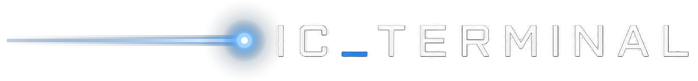
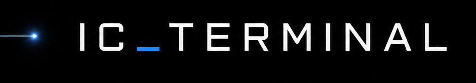

The institutional research layer, made possible by agentic AI.

Venture teams make high-stakes decisions from scattered material: decks, founder claims, websites, market noise, partial metrics, and internal notes.
The problem is not lack of information.
The problem is knowing which claims to test, which assumptions carry the case, and which unanswered questions could change the decision.
Research framework · example phase run
Vertically integrated launch, satellite broadband, and AI. Filing to list on Nasdaq as SPCX.
A real SpaceX S-1 report. Three findings it surfaced, each chained to the filing:
Sanitized and public at ic-terminal.com, so the depth is checkable before any meeting. Not investment advice.
Submit a target: a company, a URL, a filing, or a codebase. IC Terminal runs the framework the decision needs and returns a sourced, conviction-scored deliverable, never a summary.
An IC memo with a bear, base, and bull verdict, built from a financial, competitive-moat, and technical read.
A long-form report: competitor teardowns, technical architecture, and economic and game-theory analysis.
Developer and CTO reports: severity-ranked gaps, risks, and key-person exposure.
Whatever the target, the depth and the evidence trail stay the same.
Point it at your next deal, idea, company, or codebase, and get an audit-grade verdict back with every claim traceable.
ic-terminal.com